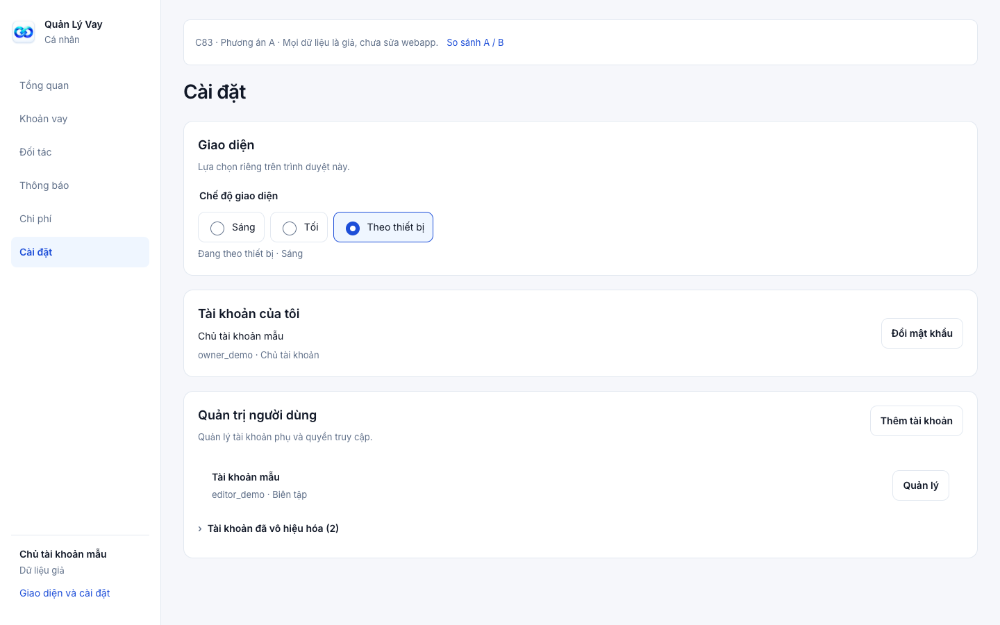
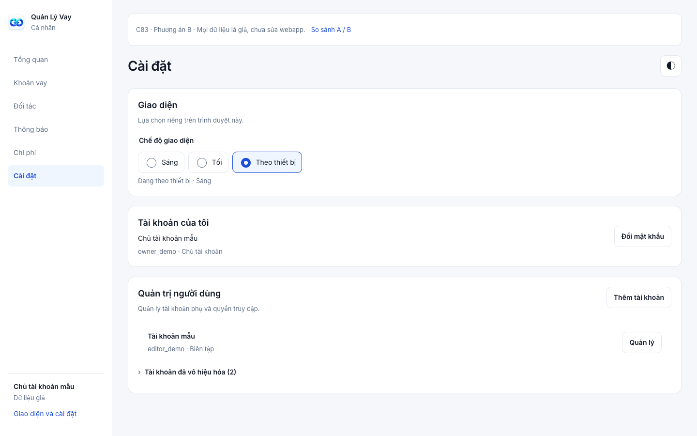
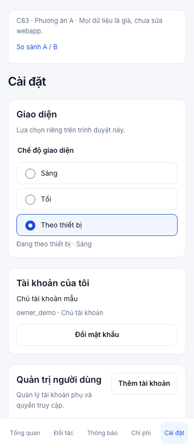
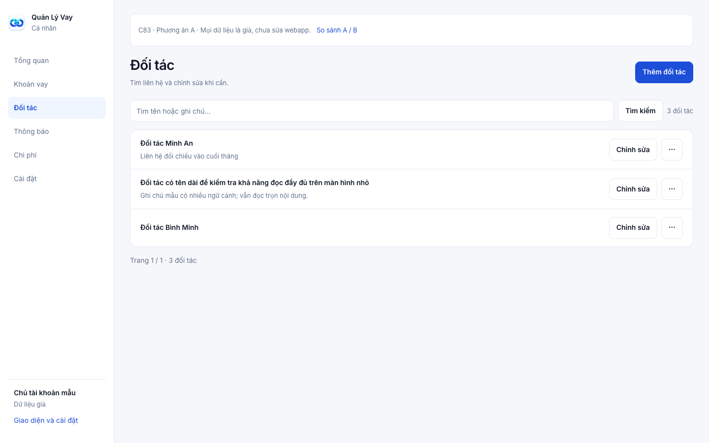
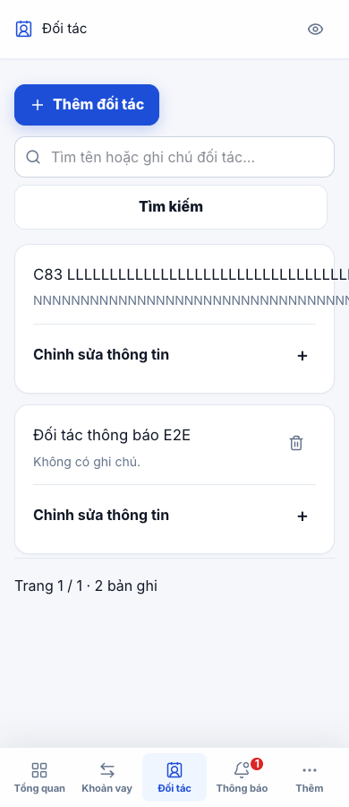
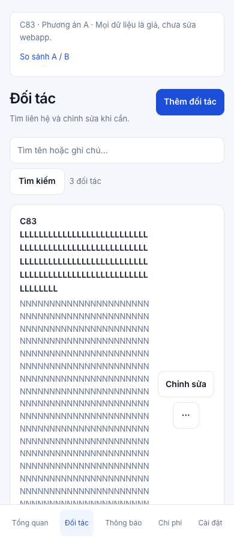

C83 · Audit với Evon ui-ux · 04/10/2026
Gọn thao tác, chủ động chọn Sáng / Tối
Hai phương án giữ màu xanh, Inter và hệ component hiện có. KPI dư nợ và lãi ròng vẫn ở trên Việc cần xử lý. Mọi số liệu và tài khoản dưới đây là giả.
A · Cài đặt rõ ràng, danh sách gọn
Khuyên dùng. Ba lựa chọn giao diện có nhãn đầy đủ tại Cài đặt. Đối tác và chi phí dùng hàng gọn, thao tác phụ vào menu. Mobile vẫn đọc đủ tên và tiền.

- Dễ hiểu, ít thêm nút trên mỗi màn.
- Mobile: Thêm → Cài đặt → Giao diện.
- Phân bổ chi phí thu gọn; danh sách xuất hiện sớm hơn.
B · Đổi giao diện ngay trên header
Nút giao diện mở ba lựa chọn trên mọi màn; Cài đặt vẫn là nơi quản lý chính. Giữ các card tách biệt cho đối tác và chi phí.

- Đổi giao diện nhanh hơn một lần mở menu.
- Header thêm một control; mobile chật hơn khi có nút tạo.
- Card thoáng hơn nhưng danh sách dài hơn A.
Trước / sau mô phỏng · Cài đặt mobile



Trước / sau mô phỏng · Đối tác desktop



Chuỗi dài hợp lệ · trước / sau mô phỏng




Luồng dự kiến cho C84
Sáng hoặc Tối luôn ưu tiên hơn cài đặt hệ điều hành. Theo thiết bị cập nhật khi thiết bị đổi. Lựa chọn lưu riêng trên browser; áp dụng trước lần vẽ đầu, giữ khi chuyển tab và tải lại. Bộ chọn dùng radio có nhãn, selected và focus rõ, điều khiển được bằng phím.
Giữ tên/ghi chú dài trong màn; chuẩn hóa trang vượt giới hạn; bảo vệ draft; không cho “bỏ thay đổi” khi thao tác lưu đã gửi; sửa tương phản Dark và privacy biểu đồ. Drawer đã tự đóng đúng sẽ được giữ và kiểm hồi quy.
Prototype chỉ đổi bản xem mẫu, không lưu preference, không gọi API và không thay dữ liệu. Bạn có thể duyệt C84 với A (khuyên dùng), hoặc chọn B trước khi triển khai.